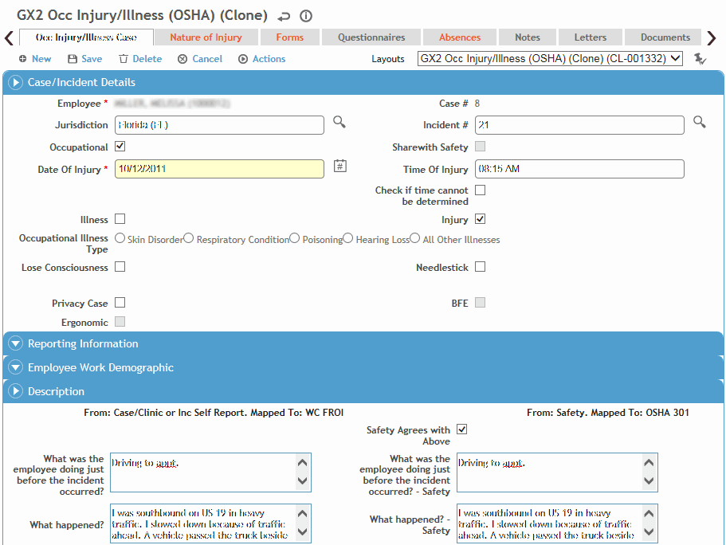

On the Injuries/Illness tab of an incident report, click a link to view an existing record, or click New.
Some of these fields may have been transferred from the Case/Incident tab in the Clinic Visits module; in this case, they are not editable by safety personnel (however a user with the appropriate permission can choose Actions»Edit Employee to unlock the Employee field if the incorrect employee was chosen).
There is a system setting that allows synchronization of many of the Injury/Illness fields with similar fields on the Incident form.

Enter details about the injury/illness. Most fields are self-explanatory, but you should know:
Indicate if this case is an Injury or Illness. If you choose Illness, select the Illness Type.
Indicate whether the incident is a Privacy Case and whether a Needlestick injury occurred (Privacy Case must be selected if Needlestick is selected). If Privacy Case is selected, any automatically generated emails will display “Privacy Case” instead of the employee name.
In the Description section, enter information about what happened. If the safety manager agrees with the Medical fields on the left, select the Safety Agrees With Medical checkbox; otherwise, complete the fields on the right. The fields on the left will populate the Employer’s First Report, and the fields on the right will populate the OSHA 301 report. If the Safety Agrees With Medical checkbox is selected, the same information will appear on both reports.
You can enter these fields directly, or choose Actions»OSHA Wizard to guide you through the questions. The information you enter in the wizard will appear in the fields on the form.
If the employee received treatment away from the work site, in the Treatment Information section specify the location where treatment was given and indicate whether the employee was treated in an emergency room and/or was admitted to hospital.
Enter the appropriate Safety Classifications, including the Cause of Injury. When you save the form, any preventive actions associated with any of the fields will appear in the Actions tab.
In the OSHA section:
If the appropriate system setting is enabled, the OSHA Recordable checkbox is disabled from manual selection and will be selected automatically if the Nature of Injury, Medication, Procedure or Absences Status is identified as OSHA recordable in the corresponding look-up table; or if the employee died or lost consciousness. Depending on your user role (defined in the system settings; see Changing Your System Settings), you can override this flag: choose Actions»Override OSHA Recordable Flag. If this action has been previously overridden, the Action text is displayed in red; another action allows you to view the history of such overrides.
If the appropriate system setting is not selected, users can select or clear the OSHA Recordable checkbox directly.
The Date became recordable refers to the incident date when the case became recordable.
If you want a red line to be displayed through this entry on the OSHA log, select Line Out on OSHA Log? and enter the Reason, your initials and the date.
When you click Save, you will be prompted to send an email to Health Services.
You can now do any of the following:
If you have completed and saved the Employers Report on the Forms tab, choose Actions»Email Employers Report to email the Employer’s First Report to the appropriate jurisdiction (see Completing the Employers Report).
To view the US OSHA 301 report, choose Actions»Generate OSHA 301 (see Completing the OSHA 301 Report and OSHA Electronic Submissions).
To create a Case Master for the employee, choose Actions»Go to Case (see Working with a Case Master File).
If you came to the Incident report by linking from a Body Fluid Exposure record (i.e. the BFE record is marked “Share with Safety” or “Occupational” and you chose Actions»Go to Incident), choose Actions»Go to BFE to return to the body fluid exposure record (see Working with Body Fluid Exposures).
To record costs associated with compensation for an occupational illness or injury, see Tracking Cost Information.
Identify all related injuries, including the nature of each injury and the part of the body affected. Click a link to edit an existing record, or click New. The first entry is designated as Primary but you can assign another injury as primary instead.
The Forms tab contains the Employers Report (see also Completing the Employers Report) and may contain additional forms prescribed by the state or province of jurisdiction for use when the employee returns to work, or user-created forms added to the PDFForm look-up table. The forms available are determined by the Jurisdiction selected. Forms are linked to a jurisdiction in the Jurisdiction look-up table.
There may be additional forms linked to the module that are not displayed by default. You can see these on the “Available, Not Selected Forms” view.
For US Dept. of Labor, if this is an Injury incident, the form available is CA-1; if this is an Illness incident, CA-2 is the available form.
Click the link of the form you want to complete.
The form opens as a PDF form with active fields. Any applicable data is transferred from the incident report.
Press tab to move to each field, or click in the fields to complete them.
Click Save on the form when you are finished.
The Questionnaires tab allows you to associate questionnaires with a record. For information about creating and administering questionnaires, see Questionnaires.
The Absences tab displays all absences recorded for this employee in the Clinic Visits, Incident, or Case Management modules. For information about entering an absence, see Recording an Absence.
The Notes tab allows you to record additional information that does not fit elsewhere in the form. For more information, see Adding Notes to a Form.
The Letters tab allows you to view past letters or generate new letters to employees. Form letters are stored in the LettersTemplate look-up table. For information about creating letters, see Generating a Letter.
Use the Documents tab to link an external file to an incident. Linking a file to an incident offers safety professionals easy access to the file (for more information, see Linking or Importing a Document).